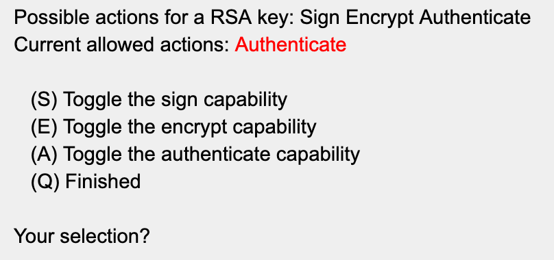

YubiKey Configuration Guide
Introduction
The YubiKey is a hardware authentication device manufactured by Yubico that supports one-time passwords, public-key encryption and authentication, and the Universal 2nd Factor (U2F) and FIDO2 protocols developed by the FIDO Alliance. It allows users to securely log into their accounts by emitting one-time passwords or using a FIDO-based public/private key pair generated by the device. YubiKey also allows for storing static passwords for use at sites that do not support one-time passwords. Some password managers, including 1Password, support YubiKey.
The YubiKey will allow us to sign our GitHub commits, which may be required by some contracts.
If you have problems or questions during the configuration process, check in with #infrasec-chat on the Truss Slack.
PIN codes and passphrases may be cached for a short duration at any point during the configuration process. You may not always be prompted to enter these.
Purchasing and Distribution
It is currently recommended that distributed Trussels purchase their YubiKey directly from either Amazon or Yubico. The SF office may opt to purchase some YubiKeys in bulk for local Trussels, but this has not been decided yet. Bulk purchasing of YubiKeys yields a savings of $2.40 per $60 YubiKey.
If ordering a YubiKey for a project, check with your project on how to categorize the expense in Expensify. Otherwise, use the Computer Equipment category.
You should purchase a YubiKey 5 Series (5C, 5C Nano, 5ci)
- 5Ci supports both USB C and Lighting ports, which is good if you have an iPhone.
- 5C and 5C Nano only support USB C and come in different form factors.
If you have a YubiKey Series 4 or a YubiKey 5 NEO, you should upgrade to a 5 Series, unless you have a specific need for the older model. The YubiKey 5 series will provide stronger security and can support larger encryption keys.
Prerequisites
Hardware Requirements
- YubiKey 5 Series (5C, 5C Nano, 5ci)
- YubiKey 4 Series and 5 NEO are acceptable, but not preferred. Keys are limited to 2048 bits
FIPS based YubiKeys ship with security vulnerabilities. Do not purchase a FIPS based YubiKey for work performed at Truss. FIPS YubiKey models are specifically called YubiKey FIPS and not part of the 5 series listed above.
Yubico Security Advisory about FIPS keys
Software Requirements
- brew
- ykman
- ykpers
- brew cask
- gpg-suite-no-mail
Configure your environment with:
brew install ykman ykpers
brew install --cask gpg-suite-no-mail
If xcode is not up to date, you will be prompted to install it with: xcode-select --install
Configuring Your Environment
Enable SSH support by default when launching gpg-agent:
echo enable-ssh-support >> ~/.gnupg/gpg-agent.conf
Add the following to your shell profile .bashrc, .zshrc, etc.
# allow GPG to sign in the terminal
GPG_TTY=$(tty)
export GPG_TTY
# Expose the SSH agent to the GPG agent.
SSH_AUTH_SOCK="${HOME}/.gnupg/S.gpg-agent.ssh"
export SSH_AUTH_SOCK
# Define a function to manually reset the GPG and SSH agent.
yubikey-init () {
if pgrep gpg-agent > /dev/null; then killall gpg-agent; fi
if pgrep ssh-agent > /dev/null; then killall ssh-agent; fi
gpg --card-status all &> /dev/null
}
Run yubikey-init to manually reset the GPG agent whenever you need to, such as after re-inserting
your YubiKey into your computer.
To configure the GPG agent to use your YubiKey upon logging into the system, create a new file at
~/Library/LaunchAgents/gpg-agent.plist with the following contents (Note: this assumes you are
using GPG Suite, which can be installed using brew cask install gpg-suite-no-mail):
<?xml version="1.0" encoding="UTF-8"?>
<!DOCTYPE plist PUBLIC "-//Apple//DTD PLIST 1.0//EN" "http://www.apple.com/DTDs/PropertyList-1.0.dtd">
<plist version="1.0">
<dict>
<key>Label</key>
<string>gpg-agent</string>
<key>ProgramArguments</key>
<array>
<string>/bin/bash</string>
<string>-c</string>
<string>
if pgrep gpg-agent > /dev/null; then killall gpg-agent; fi
if pgrep ssh-agent > /dev/null; then killall ssh-agent; fi
gpg --card-status all &> /dev/null
</string>
</array>
<key>RunAtLoad</key>
<true/>
</dict>
</plist>
Regarding the use of gpg --card-status all &> /dev/null, this seems to be the only reliable
approach we have found to get gpg-agent to use YubiKey when running Big Sur. This command starts
gpg-agent as a daemon if it is not currently running, so it is an implicit way of starting
gpg-agent. Otherwise, using something like gpg-agent --daemon would work equally as well.
Using pinentry (optional)
Instead of prompting you in a terminal, you can have gpg-agent use an external program. This might be useful if you want to use your editor for commits.
- Intel Based Mac
- M1 Based Mac
Your homebrew path may be different for pinentry-mac than below. You can confirm it with which pinentry-mac
brew install pinentry-mac
echo 'pinentry-program /usr/local/bin/pinentry-mac' >> \
~/.gnupg/gpg-agent.conf
gpgconf --kill gpg-agent
gpg --card-status all &> /dev/null
If you are on an M1 based Macbook then your homebrew path will likely be different for pinentry-mac. You can confirm it with which pinentry-mac
brew install pinentry-mac
echo 'pinentry-program /opt/homebrew/bin/pinentry-mac' >> \
~/.gnupg/gpg-agent.conf
gpgconf --kill gpg-agent
gpg --card-status all &> /dev/null
If you use this, you do not need to set GPG_TTY.
Verifying Your YubiKey
To verify a YubiKey is genuine, open a browser with U2F support to https://www.yubico.com/genuine/. (Chrome, FireFox and Safari work). Insert a Yubico device, and select Verify Device to begin the process. Touch the YubiKey when prompted, and if asked, allow it to see the make and model of the device. If you see Verification complete, the device is authentic.
This website verifies the YubiKey's device attestation certificates signed by a set of Yubico CAs, and helps mitigate supply chain attacks.
Setting the YubiKey User and Admin PIN codes
The YubiKey ships with a default User PIN of 123456 and a default Admin PIN of 12345678. For security purposes, these PIN codes must be changed before use.
The User PIN is the PIN that will be used on a daily basis when signing commits or authenticating. The Admin PIN is used to make changes to the YubiKey itself, such as when enabling or disabling touch-mode.
- Insert your YubiKey into the USB port.
- Enter the command:
gpg --card-edit - Enter the command:
admin - Enter the command:
passwd - To change the Admin PIN enter:
3 - Enter the default PIN of
12345678 - Enter your new 8 digit Admin PIN, add it to 1Password, and confirm it.
- To change the User PIN enter:
1 - Enter the default PIN of
123456 - Enter your new 6 digit User PIN, add it to 1Password, and confirm it.
- Enter the command:
q - Enter the command:
name - Enter your surname and given name (these should match the name provided when you generate your certificate)
- Enter the command
qto exit the admin menu
If at any point you make a mistake and need to reset your YubiKey PIN(s), you can do so with the command: ykman openpgp reset
Key Generation
Generating a GPG Private Key
This will generate the secret key.
- Enter the GPG command:
gpg --expert --full-gen-key - When prompted to specify the key type, enter 1 (for "RSA and RSA") and press Enter
- Specify the size of key you want to generate. This key size will also apply to subkey size. Do one of the following:
- For a YubiKey 4 series, enter 2048 and press Enter
- For a YubiKey 5 series, enter 4096 and press Enter
- Specify an indefinite expiration date of the key by pressing press Enter. Verify the expiration date when prompted
- Now you will enter your user information. Enter your Real Name and press Enter. Be sure to enter both your first and last name
- Enter your
@truss.worksEmail Address and press Enter. If you do not perform commits with your @truss.works email address, we’ll add your GitHub email address to the key in a later step. - If desired, enter a Comment about this key (e.g., “work”), and press Enter. (To leave the comment blank, just press Enter)
- Review the information you entered, make any changes if necessary. If all information is correct, enter O (for Okay) and press Enter
- A dialog box is displayed so you can enter the passphrase for your key. While the key is being generated, move your mouse around or type on the keyboard to gain enough entropy. When the key has been generated, you will see several messages displayed. Make a note of the key ID, that is displayed in the message such as
gpg: key 1234ABC marked as ultimately trusted. The key ID in this case is 1234ABC and you will need this key ID to perform other operations.
If at any point you forget the key ID, enter gpg --list-signatures to display it. If the key ID isn't displayed during the previous command it will be when you run gpg --list-signatures.
It’s time to add the subkeys. Some of these may already be created. You can check what’s been created by checking your keys.
Add a (S) signing subkey
This will be used for git commit and tag signing.
- Enter the GPG command:
gpg --expert --edit-key 1234ABC(where 1234ABC is the key ID of your key) - Enter the command:
addkey - You are prompted to specify the type of key. Enter 4 for RSA (sign only)
- Specify the size of the key that you want to generate. Do one of the following:
- For a YubiKey 4 series, enter 2048 and press Enter
- For a YubiKey 5 series, enter 4096 and press Enter
- Specify the expiration of the authentication key (this should be the same expiration as the key). Unless you have a specific need, this should be set to indefinite
- When prompted to save your changes, enter y (yes)
- If prompted to replace the existing key, select no.
- Enter the passphrase for the key. Note that this is the passphrase, and not the User PIN or Admin PIN
Add an (A) authentication subkey
This subkey will be used to pull private git repos via SSH and may be used to authenticate to any SSH host.
-
Enter the GPG command:
gpg --expert --edit-key 1234ABC(where 1234ABC is the key ID of your key) -
Enter the command:
addkey -
You are prompted to specify the type of key. Enter 8 for RSA
-
To add an authentication key, toggle all options until Authenticate is the only selection, and then Q if you are finished.
This is interface has a unique design where you need to toggle things on and off to get the desired result. The default state shows Sign Encrypt active.

Enter
Ato enable Authenticate. EnterEandS(separately) to disable Sign and Encrypt. -
Hit
Qto finish. -
Specify the size of the key that you want to generate. Do one of the following:
- For a YubiKey 4 series, enter 2048 and press Enter
- For a YubiKey 5 series, enter 4096 and press Enter
-
Specify the expiration of the authentication key (this should be the same expiration as the key). Unless you have a specific need, this should be set to indefinite
-
When prompted to save your changes, enter y (yes)
- If prompted to replace the existing key, select no.
-
Enter the passphrase for the key. Note that this is the passphrase, and not the User PIN or Admin PIN
Check Your Keys
After adding the subkeys, enter the GPG command: gpg --expert --edit-key 1234ABC (where 1234ABC is the key ID of your key)
The optimal output should look similar to this, showing an individual subkey for E (Encrypt), A (Authenticate), and S (Sign) in the YubiKey keychain.

Deleting a secret key
If you add one too many keys, you can delete them.
- Enter the GPG command:
gpg --edit-key 1234ABC(where 1234ABC is the key ID of your key) - Enter
key 1(This will select the first key but you can select any key) - After pressing enter an asterisk will appear next to that key
- Enter the command:
delkey - It will then ask if you want to delete the key. Select yes
- Enter your passphrase
- Verify the key is deleted
- Repeat if multiple keys need to be deleted
Note that if you have not imported the keys to your YubiKey yet then your output will not include those card-no details.
Creating Backups
These steps are optional and will help to configure a new YubiKey should yours become lost or damaged. While you could start from scratch, and should in some cases, this will provide the quickest path to recovery.
Create a backup of your secret keys (optional)
This will create a backup of the secret key and subkeys.
- Insert the YubiKey into the USB port
- Enter the GPG command:
gpg --export-secret-key --armor 1234ABC > /path/to/secret.key(where 1234ABC is the key ID of your key) - Enter the GPG command:
gpg --export-secret-subkeys --armor 1234ABC > /path/to/secret.sub.key(where 1234ABC is the key ID of your key) - Store these files in 1Password and delete them from your system.
Create a backup of your public key (optional)
Save the public key in 1Password for reference. This is not secret material, but it can be helpful to have it saved alongside the secret key material. You can export it using the following command:
gpg --export --armor 1234ABC > public.key
Create a revocation certificate (optional)
This will allow you to revoke the key should your secret key becomes lost or compromised. This step is not required in our current use case because we’re not uploading our certificates to a public keyserver. This may be required for future use at some point, so we’ll leave this in place for the time being.
- Enter the command:
gpg --gen-revoke 1234ABC > 1234ABC-revoke-cert.asc(where 1234ABC is the key ID of your key) - Enter the command:
Y - Select a reason for revocation. The reason really doesn’t matter for our use case. I usually select 3 = Key is no longer used
- Enter an optional description, or hit enter to continue. This field is not important.
- Enter the command:
Y - Store this file in 1Password and delete it from your system.
Configuring the YubiKey
Importing the keys to your YubiKey
This will destructively move the secret key as well as the three subkeys to the YubiKey from the local keystore, via the keytocard command. In this case, destructively is a good thing because it will require the YubiKey to be inserted to perform any of these functions.
-
Insert the YubiKey into the USB port
-
Enter the GPG command:
gpg --edit-key 1234ABC(where 1234ABC is the key ID of your key) -
Enter the command:
toggleto switch to the public key listing (there will be no visible output) -
Enter the command:
key 1(to select subkey 1)The interface is not intuitive here. Typing
key 1will select the first subkey (ssb). An * next to the key will indicate that it has been selected:
-
Enter the command:
keytocard -
When prompted where to store the key, select
2. This will move the encryption subkey to the YubiKey -
Enter the command:
key 1(to deselect subkey 1) -
Enter the command:
key 2(to select subkey 2) -
Enter the command:
keytocard -
When prompted where to store the key, select 1. This will move the signing subkey to the YubiKey
-
Enter the command:
key 2(to deselect subkey 2) -
Enter the command:
key 3(to select subkey 3) -
Enter the command:
keytocard -
When prompted where to store the key, select 3. This will move the authentication subkey to the YubiKey
-
Enter the command:
saveto save the configuration and exit to the CLI.
Adding Additional Email Addresses
- Insert the YubiKey into the USB port
- Enter the GPG command:
gpg --expert --edit-key 1234ABC(where 1234ABC is the key ID of your key) - Enter the command:
adduid - Enter your Name
- Enter the Additional Email Address
- Enter a comment if desired
- Enter (
O)kay - Enter your PIN if prompted
- Enter the command:
quit - When prompted to save your changes, enter y (yes). You have now saved the additional email address to your YubiKey
UIDs and the primary key
User IDs are attached to the primary key (aka: master key). Subkeys do not contain any user ID information. Therefore, if you want to change the user ID information, you only need to:
- Modify the primary key (after importing from the key saved in 1Password) to include whatever user ID(s) you choose.
- Re-generate GPG ASCII armor.
- Upload the new GPG ASCII armor to GitHub.
- Re-import the new public key into your local keychain.
This process does not require modification of anything on the YubiKey. You can verify the results
of your changes by running gpg --card-status while you do and do not have the public key imported
into your local keychain. For example:
Without importing public key into your local GPG keychain:
$ gpg --card-status | grep key
URL of public key : [not set]
Signature key ....: AAAA BBBB CCCC DDDD EEEE FFFF 0000 1111 2345 6CDE
Encryption key....: BBBB CCCC DDDD EEEE FFFF 0000 1111 2222 3234 5BCD
Authentication key: CCCC DDDD EEEE FFFF 0000 1111 2222 3333 4456 7DEF
General key info..: [none]
With importing public key into your local GPG keychain (note the "General key info" now shows User ID information):
$ gpg --card-status | grep key
URL of public key : [not set]
Signature key ....: AAAA BBBB CCCC DDDD EEEE FFFF 0000 1111 2345 6CDE
Encryption key....: BBBB CCCC DDDD EEEE FFFF 0000 1111 2222 3234 5BCD
Authentication key: CCCC DDDD EEEE FFFF 0000 1111 2222 3333 4456 7DEF
General key info..: sub rsa4096/3456CDE 2020-10-14 Human Person <noreply@truss.works>
Configuring SSH
- Insert the YubiKey into the USB port
- Configure your environment
- Enter the GPG command:
gpg --export-ssh-key 1234ABC(where 1234ABC is the key ID of your key) - This will return a string that begins with: ssh-rsa and ends with openpgp:0x1234ABC
- To use this key to push to GitHub, copy this key into your GitHub account. If you need to use it to SSH directly into a host, you will need to add it to an authorized-keys file.
- Verify the SSH key with the command: ssh-add -L
- This should verify that the SSH key is available on your yubikey. If the string ends in
cardno:000YXXXXXXXX, then it is on the YubiKey. - Restart the SSH services if necessary with the following commands: source ~/.bash_profile or source ~/.bashrc
- When connecting via SSH, you should be prompted for your YubiKey User PIN
- On first use, it may also prompt for the YubiKey passphrase.
Configuring git commit Signing
-
Insert the YubiKey into the USB port
-
Enter the GPG command:
gpg --export --armor 1234ABC(where 1234ABC is the key ID of your secret key) -
This will export your public key, which is derived from the secret key. Copy this entire key including the lines:
-----BEGIN PGP PUBLIC KEY BLOCK-----
-----END PGP PUBLIC KEY BLOCK----- -
Add this key into GitHub
-
Add the key into your git config with the following command:
git config --global user.signingkey 1234ABC(where 1234ABC is the key ID of your key) -
Add your name to your git config with the following command:
git config --global user.name “your name”(this should match the name provided when you generate your certificate) -
Add your email to your git config with the following command:
git config --global user.email youremail@truss.works(this should match the email that you push commits with) -
Configure Git client to always sign commits:
git config --global commit.gpgsign true
Configuring Github
This step is not sequential and is linked in previous steps. If you’ve reached this point in the document, you should have already completed this.
- Sign into the GitHub web interface
- Click on the user icon in the upper right hand corner and select settings
- Select SSH and PGP Keys
- Add an SSH Key and enter the value generated in Configuring SSH
- Add a new GPG Key and enter the value generated in Configuring git signing
Using Github Desktop
- echo no-tty >> ~/.gnupg/gpg.conf
- Specify GPG path for clients:
git config --global gpg.program /usr/local/bin/gpg
Verifying your configuration
To verify that you have both GPG and SSH properly configured, perform the following steps.
-
Close out of all terminals. This is to ensure that any terminal/shell configuration you made is saved to disk rather than only configured for a shell session. Re-open your terminal of choice.
-
Remove your YubiKey.
-
Verify that the only data from your key in your GPG keyring is public key information. If you see
sec(secret) next to your primary key and/orssb(secret subkey), then you still have secret key material in your keyring and/or on your system. Follow the instructions in the deleting local secret key material section if this is the case.$ gpg --list-keys 1234ABC
pub rsa4096 2020-10-13 [SC]
REALLYEXTRALONGSTRINGTHATENDSWITH1234ABC
uid [ultimate] Human Person <noreply@truss.works>
sub rsa4096 2020-10-13 [E]
sub rsa4096 2020-10-14 [S]
sub rsa4096 2020-10-14 [A]You can also run these commands to see if you have any secret key material in your keyring.
gpg --export-secret-key --armor 1234ABC | gpg --list-packets --verbose | grep skey
gpg --export-secret-subkeys --armor 1234ABC | gpg --list-packets --verbose | grep skey2 things will tell you that the secret key material is not present:
- GPG will not ask for your passphrase. If secret key material was present, it would have asked for a passphrase so that it could decrypt the secret key material.
- You have no output. If you had output, it would look something like
skey[2]: [v4 protected]. If you do haveskeyin your output, then you have secret key material on your local system. If no secret key material is on your local system, then you should only havepkeyvalues (if you remove thegrepcommand).- skey: secret key
- pkey: public key
-
Re-insert your YubiKey.
-
Initialize your YubiKey in whatever way you configured it. If you made a separate script, run that. If you need to open a new terminal, do that. Whatever approach you take, it should be the thing that does a
killallon gpg-agent and ssh-agent, followed bygpg --card-status all &> /dev/null. -
Verify that the secret key data is now available to GPG. This is what it looks like when the key material only exists on the YubiKey (not loaded from secret material stored on your system):
$ gpg --card-status
<snip>
sec# rsa4096/1234ABC created: 2020-10-13 expires: never
ssb> rsa4096/2345BCD created: 2020-10-13 expires: never
card-no: 000Y XXXXXXXX
ssb> rsa4096/3456CDE created: 2020-10-14 expires: never
card-no: 000Y XXXXXXXX
ssb> rsa4096/4567DEF created: 2020-10-14 expires: never
card-no: 000Y XXXXXXXXIf you do not see
sec#next to the primary key and do not seessb>next to the subkeys, then the secret key material may exist on the YubiKey, but GPG is falling back to locally stored/loaded secret key material. If this is the case (incorrect configuration), it will look like this. Note there is no#aftersecand no>afterssb:$ gpg --card-status
<snip>
sec rsa4096/1234ABC created: 2020-10-13 expires: never
ssb rsa4096/2345BCD created: 2020-10-13 expires: never
ssb rsa4096/3456CDE created: 2020-10-14 expires: never
ssb rsa4096/4567DEF created: 2020-10-14 expires: neverIf you do not see the
#and>characters aftersecandssb, then the secret key material needs to be removed from your local system. See the deleting local secret key material section if this is the case. -
Verify that the SSH agent can use the subkey used for authentication. If you do not see an entry with
cardnonear the end, then the SSH agent is not correctly configured to use the authentication subkey on your YubiKey.$ ssh-add -L
ssh-rsa AAAAB3<snip>2yyu4Q== cardno:000YXXXXXXXX -
Verify that the GPG agent can use the subkey used for signing. You should see a PGP signature that is generated by running this test. If not, then the GPG agent is not correctly configured to use the signing subkey on your YubiKey.
$ echo "test" | gpg --clearsign
gpg: using "REALLYEXTRALONGSTRINGTHATENDSWITH1234ABC" as default secret key for signing
-----BEGIN PGP SIGNED MESSAGE-----
Hash: SHA256
test
-----BEGIN PGP SIGNATURE-----
iQIzBAEBCAAdFiEE9zVLjb+li/0UKVrGlXbmxIOHrVoFAl+HbEgACgkQlXbmxIOH
rVqu7g//RtdsYwTS5+k2pF+IEUyZk0LXnjdnRZhEjRT9M34d/Sh6jhgYZPLx7NLp
+YSKRLnMpxx1JbS/ffkmq9zibeODyeilO30zh6xC5TsIZak489i0jl1wTo4J7DGf
4VqoTqNwc3RE8FTUYFGX6trgbjeu7q7yoo6yEGWaxLhR0/TRTU0/eREgAsdwxR+6
7TkmhxIXV7zO6pe4wLddvJzOM/KZyaumv1dJ0nX3U4q50IqXf+He3WGuetZUci80
mIsUfv7TH2Bo3kIqm/cTtcpjiXrIXrfpFxC5o9mGII5tw3YzXw0chGm7X5q2yyTl
7DNpJE/s6kXei45UER/NtyKH6N63GRN9c3aBs4ARGIU/hAlH5SrKOlRCTYENh0HC
dGJZ68LBvpUNujtU/8TZaPPz0cfhb1hhOa8Ruoo9DwujpScjgpKgpuVxCM+YZB2l
8/mGGhAzXDIhE8JDjEKk2bHaTy2gulwqTDjuv572qwwJvYkQT3wmx8dp0jswL0fj
NdjVPs47PGNsLkrVnudzx4VkrS/l8+1g2jn2jCsEbwzjSqWsDYEDAbgopNC4wUQC
LvXG4r7r2JS6rlmE9rOMlsx3IW16eIGmRCunbP6oOzPJkFn7rBEpl8U37CVdU46F
hrWMtDgZrBwtz9oklxMfnQMWq+4lCEVuxT6nMJ8FeqxxAnmhVUc=
=7pFx
-----END PGP SIGNATURE-----If this errors out like this be sure that the environment var
GPG_TTYis set. See Configuring Your Environment0 ❯ echo "test" | gpg --clearsign
-----BEGIN PGP SIGNED MESSAGE-----
Hash: SHA256
test
gpg: signing failed: Inappropriate ioctl for device
gpg: [stdin]: clear-sign failed: Inappropriate ioctl for device -
Verify that the GPG agent can use the subkey used for encryption. This command will create content ("hello world"), encrypt it from standard input to standard output, and then decrypt it from standard input to standard output. The final line should be the input string ("hello world").
$ echo "hello world" | gpg --recipient 1234ABC -o- --encrypt - | gpg --decrypt -
gpg: encrypted with 4096-bit RSA key, ID 2345BCD, created 2020-10-13
"Human Person <noreply@truss.works>"
hello worldYou may get an error such as the following. This is transient. As long as the output ends with the string that you echoed out, then everything is working properly.
gpg: error opening lockfile '/Users/human/.gnupg/pubring.kbx.lock': No such file or directory
gpg: lockfile disappeared
Deleting local secret key material
During this process, you may find that you have secret key material on your system even though you
thought you removed it. For instance, this may happen when using keytocard. While it is supposed
to be destructive and remove secret key material from your system (leaving it only on your
YubiKey), this is not always the case despite what the documentation indicates. Therefore, you may
have to manually remove the secret keys from your system. To do that, follow this procedure:
-
Remove the YubiKey from the computer.
-
Delete the secret key material from your system. Do not remove your public key material or else your GPG agent will not be able to identify the correct secret keys to use on your YubiKey.
To delete your primary secret key material, run the following command:
gpg --delete-secret-key 1234ABCIf for some reason that command does not fully delete the subkey secret key material, you can delete that data with this procedure. First identify the keygrips for each subkey. Then delete them.
$ gpg --with-keygrip --list-secret-keys "1234ABC"
sec# rsa4096 2020-10-13 [SC]
REALLYEXTRALONGSTRINGTHATENDSWITH1234ABC
Keygrip = REALLYEXTRALONGSTRINGTHATENDSWITH5677EFA
uid [ultimate] Human Person <noreply@truss.works>
ssb> rsa4096 2020-10-13 [E]
Keygrip = REALLYEXTRALONGSTRINGTHATENDSWITH2345BCD
ssb> rsa4096 2020-10-14 [S]
Keygrip = REALLYEXTRALONGSTRINGTHATENDSWITH3456CDE
ssb> rsa4096 2020-10-14 [A]
Keygrip = REALLYEXTRALONGSTRINGTHATENDSWITH4567DEFOnce you have the subkey keygrips, delete the secret subkey material:
$ gpg-connect-agent "delete_key REALLYEXTRALONGSTRINGTHATENDSWITH2345BCD" /bye
OK
$ gpg-connect-agent "delete_key REALLYEXTRALONGSTRINGTHATENDSWITH3456CDE" /bye
OK
$ gpg-connect-agent "delete_key REALLYEXTRALONGSTRINGTHATENDSWITH4567DEF" /bye
OK -
Insert YubiKey back into the computer.
-
Ensure that the signature key, encryption key, and authentication key are set. Ensure that each of these keys have a
card-noentry next to them.gpg --card-status
<snip>
Signature key ....: AAAA BBBB CCCC DDDD EEEE FFFF 0000 1111 2345 6CDE
created ....: 2020-10-14 00:06:51
Encryption key....: BBBB CCCC DDDD EEEE FFFF 0000 1111 2222 3234 5BCD
created ....: 2020-10-13 23:59:43
Authentication key: CCCC DDDD EEEE FFFF 0000 1111 2222 3333 4456 7DEF
created ....: 2020-10-14 00:07:50
General key info..: sub rsa4096/3456CDE 2020-10-14 Human Person <noreply@truss.works>
sec# rsa4096/1234ABC created: 2020-10-13 expires: never
ssb> rsa4096/2345BCD created: 2020-10-13 expires: never
card-no: 000Y XXXXXXXX
ssb> rsa4096/3456CDE created: 2020-10-14 expires: never
card-no: 000Y XXXXXXXX
ssb> rsa4096/4567DEF created: 2020-10-14 expires: never
card-no: 000Y XXXXXXXX
Note: if you delete the public keys from your local system, then gpg operations will fail when
using your YubiKey.
Subkey stubs
~/.gnupg/private-keys-v1.d will contain the key stubs for each of the subkeys. These do not
contain secret key material, but instead tell GPG that the secret key material is on your YubiKey.
To verify this, you can look at the strings in that file and search for a match for
shadowed-private-key. The output will look similar to the following:
$ strings filename.key| grep shadowed-private-key
(20:shadowed-private-key(3:rsa(1:n513:
If you see something like the output above, then the file is a stub key, which does not contain the secret key material. Instead, it indicates that the secret key material is on your YubiKey.
Using The YubiKey
Signing git commits
-
Insert the YubiKey into the USB port
-
To manually sign a git commit (commits should already be signed automatically if you've enabled it in your git config):
$ git commit -a -S -m 'Fixed a small undocumented procedure that made foo crash' -
To manually sign a git tag:
$ git tag foo-1.0 -s -m 'Release 1.0 of foo' -
When signing, you should be prompted to enter your YubiKey User PIN
-
If you’ve enabled touch mode, touch the YubiKey to complete the operation
Enabling touch-only mode (optional)
It is possible that your YubiKey could be activated by malware on your machine, which could conceivably use a keylogger to capture your PIN and use that information to automatically sign commits and tags when you're not aware.
If enabling touch-only mode, it is recommended to perform this step after you’ve confirmed that everything else is working.
- Enter the command:
ykman openpgp keys set-touch aut on - Enter the 8 digit Admin PIN
- Enter:
yes
NOTE: When touch mode is enabled, operations will appear to stall. This is the only prompt that you will receive to touch your YubiKey. Failure to touch the YubiKey for authentication will result in failure of the operation. You can also disable touch-only mode with the following command: ykman openpgp keys set-touch aut off
Disabling OTP (One Time Password)
Disabling the OTP is possible using the YubiKey Manager, and does not affect any other functionality of the YubiKey.
A side effect of the YubiKey is the Yubisneeze. The YubiKey will generate and paste a password to your screen nearly every time that you touch it.
- Insert the YubiKey into the USB port
- Enter the command:
ykman config usb --disable otp - Enter the command:
Yto confirm
To re-enable otp, use the command: ykman config usb --enable otp
GitHub Apps
GitHub Desktop does not support commit signing. In fact, it appears that GitHub wants to keep it this way. That said, if GitHub is configured with your keys correctly, GitHub Desktop may respect your settings and sign commits. We’re still testing this.
Gitkraken directly supports commit signing.
Troubleshooting
The YubiKey is not detected when signing a commit or pulling a private repo via SSH.
- Ensure that the environment has been configured correctly
- Run
source ~/.bashrcorsource ~./zshrc
The YubiKey appears to hang when performing operations and then the operations time out.
Touch-only has been enabled. There is no prompt that the YubiKey is waiting to be touched. Run the operation again and touch the YubiKey when the operation hangs. You may see something similar to this:

SSH commands like ssh -T git@github.com do not ask for pin
0 ❯ ssh -T git@github.com
sign_and_send_pubkey: signing failed for RSA "cardno:000YXXXXXXXX" from agent: agent refused operation
git@github.com: Permission denied (publickey).
Make sure that GPG_TTY is set. If so you may need to also run gpg-connect-agent updatestartuptty /bye to force the agent to uppdate the tty